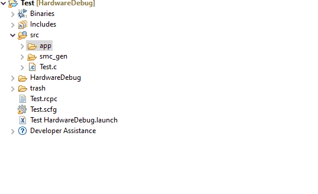
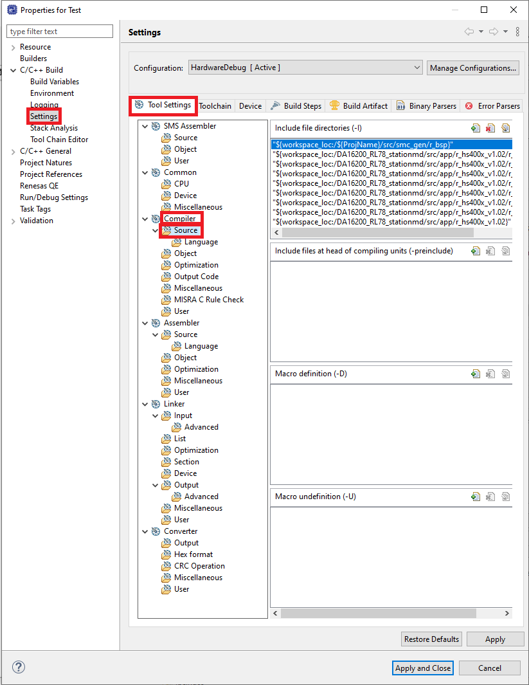
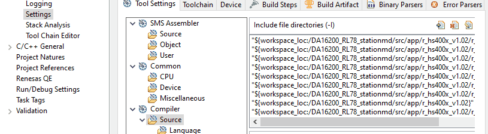
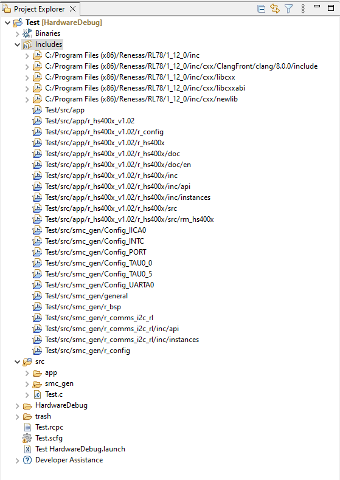
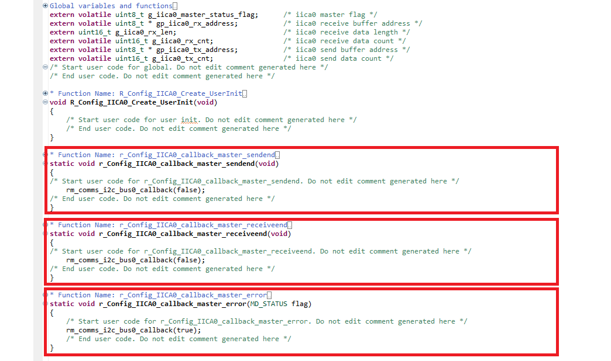
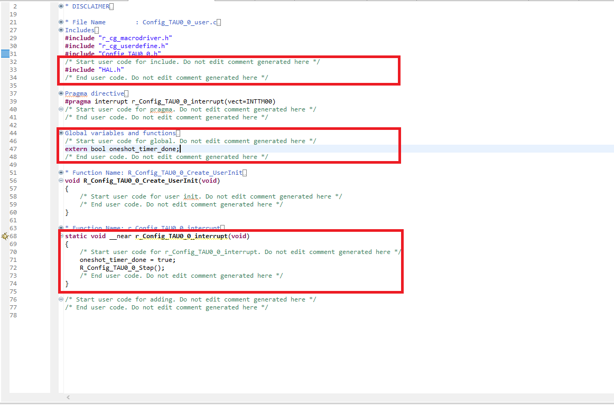
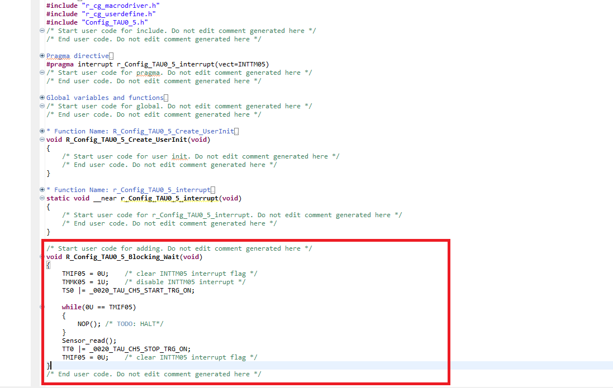

Here we will guide you through both inclusion and understanding of the code for this project. The aim is to give an understanding of how to use smart configurator generated code, the e² studio build settings & finally what the lab code does.
3.1 Pull In The Free Code
First we have to pull in the free code provided for this lab that is the hs4001 sensor library & WiFi connection
. We call this free code as it serves a fixed purpose and is only here to facilitate the
training.
To acquire the free code please click here to download & extract
the contents of the .zip archive.
Please copy the folder "app" into the "src" folder in your e² studio project.

Once you have copied the app folder, it's now time to include the folder to the project. Follow the following steps to do so:
- Locate the include directory in the project and left click on it to see an C/C++ Project Settings or use Ctrl+Alt+P. 
- Select Settings->Tool Settings->Compiler->Source. 
- click on add icon and Select workspace that will take you to the folders of the current workspace now select project folder->src->app folder which we want to include. Finally check on Add subdirectories and press ok. 
- Hit Apply and you should see the files added in the includes folder as follows 
3.2 Edit the IICA0 Driver
The I2C base driver doesn't provide the appropriate functionality out of the box - so let's edit it and
give ourselves the functions we need, this is namely an I2C send function which triggers when there's a error or event completion flag.
Navigate to [src] → [smc_gen] → [Config_IICA0] → Config_IICA0_user.c
You can edit the file in section starting with the "Start user code for function..." comment gaurd - place the following
function declarations.
Function: r_Config_IICA0_callback_master_sendend
rm_comms_i2c_bus0_callback(false);
Function: r_Config_IICA0_callback_master_receiveend
rm_comms_i2c_bus0_callback(false);
Function: r_Config_IICA0_callback_master_error
rm_comms_i2c_bus0_callback(true);
Which should look like this:
3.2 Edit the UARTA0 Driver
Now, let's edit the UART base driver with the appropriate functionality to achieve desired function requirementsed, this is namely an UART sendend and receive end function which triggers when there's a send and receive completion flag respectively.
Navigate to [src] → [smc_gen] → [Config_UARTA0] → Config_UARTA0_user.c
You can edit the file in section starting with the "Start user code for function..." comment gaurd - place the following
function declarations.
Function: r_Config_UARTA0_callback_sendend
Hal_uart_tx_done_callback();
Function: r_Config_UARTA0_callback_receiveend
Hal_uart_rx_done_callback();
Which should look like this:

3.3 Populate TAU00 ISR
The clockwise timer counter needs its ISR populating - this ISR fires every time timer runs out to make sure the UART connection with DA16200 functions timely. We fill this ISR with some code so the
the application can be made aware of a clockwise rotation.
Now first we need to include our "main.h" file from earlier to enable the ISR to communicate with the
application.
Navigate to the [src] → [smc_gen] → [Config_TAU0_0] → Config_TAU0_0_user.c &
copy the code below into the includes section of the file, inside the "Start user code for include..."
comment guard.
#include "HAL.h"Then add the following the global variable declaration section
extern bool oneshot_timer_done;
Finally inside the r_Config_TAU0_0_interrupt isr, please place the following code. This code signals to the application that the timer ran out. It also clears the interrupt flags both timers as a debounce precaution. It should be placed within the "Start user code for r_Config_TAU0_0_interrupt..." comment guard.
oneshot_timer_done = true;
R_Config_TAU0_0_Stop();
The changes should look like this when finished:
3.4 Populate TAU05 ISR
The sensor counter needs it's ISR populating - this ISR fires every millisecond to make sure the sensor reading is initiated after the sensor measurement is completed. We fill this ISR with some code so the
application functions properly.
Now first we need to include our function in the header file.
Navigate to the [src] → [smc_gen] → [Config_TAU0_5] → Config_TAU0_5.h &
copy the code below at the end of the file, inside the "Start user code for function..."
comment guard.
void R_Config_TAU0_5_Blocking_Wait(void);Next navigate to the corresponding Config_TAU0_5_user.c file ([src] → [smc_gen] → [Config_TAU0_5] → Config_TAU0_5_user.c) and please add the following code at the bottom of the file, again within the comment guard "Start user code for adding...".
void R_Config_TAU0_5_Blocking_Wait(void)
{
TMIF05 = 0U; /* clear INTTM05 interrupt flag */
TMMK05 = 1U; /* disable INTTM05 interrupt */
TS0 |= _0020_TAU_CH5_START_TRG_ON;
while(0U == TMIF05)
{
NOP(); /* TODO: HALT*/
}
Sensor_read();
TT0 |= _0020_TAU_CH5_STOP_TRG_ON;
TMIF05 = 0U; /* clear INTTM05 interrupt flag */
}The changes should look like this when finished:
3.5 Populate SPI Driver
This is meant for display and to customise the SPI configuration to work for the onboard display.
void R_Config_CSI00_Start_app(void);
void R_Config_CSI00_Send_app(const uint8_t * const tx_buf, uint16_t tx_num);The changes should look like this when finished

Navigate to the [src] → [smc_gen] → [Config_CSI00] → Config_CSI00_user.c &
Let's first declare the global variable and in order to do that copy the code, inside the "Start user code for global..."
comment guard.
static volatile bool tx_done = true;
static void Simple_polling_send(const uint8_t * const tx_buf, uint16_t tx_num);
The changes should look like this when finished:

Now, let's edit the callback function as follows: Function:r_Config_CSI00_callback_sendend
tx_done = true;This should look as follows

Next navigate to the end of the file and please add the following code at the bottom, again within the comment gaurd "Start user code for adding...".
void R_Config_CSI00_Start_app(void)
{
SO0 &= (uint16_t)~_0100_SAU_CH0_CLOCK_OUTPUT_1; /* CSI00 clock initial level */
SO0 &= (uint16_t)~_0001_SAU_CH0_DATA_OUTPUT_1; /* CSI00 SO initial level */
SOE0 |= _0001_SAU_CH0_OUTPUT_ENABLE; /* enable CSI00 output */
SS0 |= _0001_SAU_CH0_START_TRG_ON; /* enable CSI00 */
CSIIF00 = 0U; /* clear INTCSI00 interrupt flag */
CSIMK00 = 1U; /* disable INTCSI00 interrupt */
g_csi00_tx_count = 0U; /* Force the spi tx end callback to trigger on dtc completion*/
}
/* END OF FUNCTION*/
void R_Config_CSI00_Send_app(const uint8_t * const tx_buf, uint16_t tx_num)
{
const uint8_t * l_tx_buf = tx_buf;
uint16_t l_tx_num = tx_num;
uint16_t bytes_to_send = 0U;
/* Wait for previous transmission to complete*/
while(!tx_done)
{
NOP();
}
CSIMK00 = 0U; /* enable INTCSI00 interrupt */
do
{
tx_done = false;
bytes_to_send = (l_tx_num > 255U) ? 256U : l_tx_num;
l_tx_num = (l_tx_num > 255U) ? (l_tx_num-256U) : 0U;
/* Two bytes or less don't use DTC*/
if(bytes_to_send < 3U)
{
Simple_polling_send(l_tx_buf, bytes_to_send);
}
else
{
Start_dtc1(l_tx_buf+1, (__near uint8_t *)&SIO00, bytes_to_send-1U); /* Setup the DTC*/
SIO00 = *l_tx_buf; /* Trigger SPI transmission */
l_tx_buf += bytes_to_send; /* Move the buffer pointer forward*/
}
/* Wait for transmission to complete*/
while(!tx_done)
{
HALT();
}
}while(l_tx_num > 0U);
CSIMK00 = 1U; /* disable INTCSI00 interrupt */
}
/* END OF FUNCTION*/
static void Simple_polling_send(const uint8_t * const tx_buf, uint16_t tx_num)
{
uint16_t l_tx_num = tx_num;
const uint8_t * l_tx_buf = tx_buf;
CSIMK00 = 1U; /* disable INTCSI00 interrupt */
CSIIF00 = 0U; /* clear INTCSI00 interrupt flag */
tx_done = false;
while(l_tx_num > 0U)
{
SIO00 = *l_tx_buf;
l_tx_num--;
l_tx_buf++;
/* Wait for the interrupt flag to set*/
while(0U == CSIIF00)
{
NOP();
}
CSIIF00 = 0U;
}
tx_done = true;
}
/* END OF FUNCTION*/The changes should look like this when finished(In order to fit in the screen, the loops are minimised):

3.5 Edit the DTC Driver
Now, let's configure DTC and add a function to start DTC as per our requirement.
We need to declare the function so navigate to [src] → [smc_gen] → [Config_DTC] → Config_DTC.h
You can edit the file in the section starting with the "Start user code for function..." comment guard - place the following
function declarations at the end of the file.
void Start_dtc1(__near const uint8_t * src, __near uint8_t * dst, uint16_t cnt);
The changes should look like this when finished:

Now let's add the function itself and to do that open [src] → [smc_gen] → [Config_DTC] → Config_DTC.c
Now add the following function at the end of the file.
void Start_dtc1(__near const uint8_t * src, __near uint8_t * dst, uint16_t cnt)
{
dtc_controldata_1.dtbls = 1U;
dtc_controldata_1.dtcct = (cnt > 255U) ? 0U : (uint8_t)cnt;
dtc_controldata_1.dtsar = (uint16_t)src;
dtc_controldata_1.dtdar = (uint16_t)dst;
R_DTCD1_Start();
}
Which should look like this:

3.6 Pull In The Main Code
Now lets copy in the main code - this is running the application.
Simply replace the entire contents of your main source file src/<project_name>.c
with the code below.
#include "hal.h"
#include "da16200_AT.h"
#include "sensor.h"
#include
#include
#include "st7735s.h"
#include "text.h"
static const uint8_t COLOUR_BLACK[] = {0x00, 0x00};
static const uint8_t COLOUR_WHITE[] = {0xFF, 0xFF};
static ST7735S_display_area_info_t disp_info;
static void mqtt_msg_send(void);
static fsp_err_t try_read_mqtt_msg(void);
static void demo_err(void);
static void write_string_to_display(const char * const str);
void main(void)
{
static fsp_err_t err;
EI();
/* Enable the UART*/
Hal_uart_start();
/* Initialise the sensor*/
Sensor_init();
/* Enable display SPI*/
R_Config_CSI00_Start_app();
/* Initialse display*/
St7735s_init(COLOUR_WHITE);
St7735s_get_display_area_info(&disp_info);
Text_init(disp_info.xmax, disp_info.ymax);
Text_set_font(&default_font);
St7735s_wake_display();
St7735s_display_on();
St7735s_refresh();
CCS6 = 0x02U; /* 5mA backlight*/
/* Connect MCU with Wi-Fi module and initialize Wi-Fi module */
write_string_to_display("Connecting\nDA16200...");
err = wifi_con_init();
if(FSP_SUCCESS != err)
{
demo_err();
}
write_string_to_display("Success!");
R_BSP_SoftwareDelay(500, BSP_DELAY_MILLISECS);
/* Configure Wi-Fi module to station mode and let it connect to AP */
write_string_to_display("Connecting\nWiFi...");
err = wifi_con_routine();
if(FSP_SUCCESS != err)
{
demo_err();
}
write_string_to_display("Success!");
R_BSP_SoftwareDelay(500, BSP_DELAY_MILLISECS);
/* Configure Wi-Fi module to MQTT client function */
write_string_to_display("Connecting\nMQTT...");
err = mqtt_con_routine();
if(FSP_SUCCESS != err)
{
demo_err();
}
write_string_to_display("Success!");
R_BSP_SoftwareDelay(500, BSP_DELAY_MILLISECS);
Sensor_read(); /* Dummy read to populate structs with data*/
while(1)
{
/* If we haven't received an LED toggle - send temperature and humidity update*/
if(FSP_SUCCESS != try_read_mqtt_msg())
{
Sensor_read();
mqtt_msg_send();
}
}
}
static void mqtt_msg_send(void)
{
static char temperature_value_str[10];
static char humidity_value_str[10];
static char mqtt_head[] = "AT+NWMQMSG=";
static float l_temperature = 0.00f;
static float l_humidity = 0.00f;
fsp_err_t err;
l_temperature = (float)Sensor_get_temp();
l_humidity = (float)Sensor_get_humidity();
sprintf(temperature_value_str, "%f", l_temperature);
sprintf(humidity_value_str, "%f", l_humidity);
g_da16200_cmd_set[DA16200_AT_CMD_INDEX_AT_NWMQMSG].p_cmd = (uint8_t *)mqtt_head;
part_array[0] = (uint32_t)temperature_value_str;
part_array[1] = (uint32_t)at_topic_t;
part_array[2] = (uint32_t)at_cmd_end;
At_cmd_combine(DA16200_AT_CMD_INDEX_AT_NWMQMSG, part_array, 3);
write_string_to_display("Sending...\nTemperature");
err = AT_cmd_send_ok(DA16200_AT_CMD_INDEX_AT_NWMQMSG);
if(FSP_SUCCESS != err)
{
write_string_to_display("Error!");
R_BSP_SoftwareDelay(500, BSP_DELAY_MILLISECS);
}
R_BSP_SoftwareDelay(100, BSP_DELAY_MILLISECS);
g_da16200_cmd_set[DA16200_AT_CMD_INDEX_AT_NWMQMSG].p_cmd = (uint8_t *)mqtt_head;
part_array[0] = (uint32_t)humidity_value_str;
part_array[1] = (uint32_t)at_topic_h;
part_array[2] = (uint32_t)at_cmd_end;
At_cmd_combine(DA16200_AT_CMD_INDEX_AT_NWMQMSG, part_array, 3);
write_string_to_display("Sending...\nHumidity");
err = AT_cmd_send_ok(DA16200_AT_CMD_INDEX_AT_NWMQMSG);
if(FSP_SUCCESS != err)
{
write_string_to_display("Error!");
R_BSP_SoftwareDelay(500, BSP_DELAY_MILLISECS);
}
}
/* END OF FUNCTION*/
static fsp_err_t try_read_mqtt_msg(void)
{
fsp_err_t status = FSP_ERR_ASSERTION;
uint16_t total_count = 0U;
static uint8_t mqtt_read_buf[512U] = {0U,};
memset(mqtt_read_buf, 0, 512);
write_string_to_display("MQTT Read...");
/* Start timeout timer*/
Hal_oneshot_start(4000U);
do
{
/* If bytes are available*/
if(Hal_uart_rx_ready())
{
/* Check if success response is present*/
total_count += Hal_uart_read((char *)&mqtt_read_buf[total_count]);
if(STRING_EXIST == is_str_present((const char *)mqtt_read_buf, "led_toggle,1"))
{
CCS0 ^= 0x01U; /* Toggle LED*/
write_string_to_display("Success!");
R_BSP_SoftwareDelay(500, BSP_DELAY_MILLISECS);
status = FSP_SUCCESS;
}
else if(STRING_EXIST == is_str_present((const char *)mqtt_read_buf, "buzzer,1"))
{
/* Enable Buzzer*/
R_Config_PCLBUZ1_Start();
write_string_to_display("Success!");
R_BSP_SoftwareDelay(500, BSP_DELAY_MILLISECS);
R_Config_PCLBUZ1_Stop();
status = FSP_SUCCESS;
}
else
{
/* Do Nothing*/
}
}
else if(Hal_oneshot_elapsed())
{
/* If oneshot has elpased - timeout occurred*/
write_string_to_display("No Data!");
R_BSP_SoftwareDelay(500, BSP_DELAY_MILLISECS);
status = FSP_ERR_TIMEOUT;
}
else
{
/* Do Nothing*/
}
}
while( (FSP_SUCCESS != status) && (FSP_ERR_TIMEOUT != status) );
return status;
}
/* END OF FUNCTION*/
static void demo_err(void)
{
write_string_to_display("Fatal Error!");
while(1)
{
/* Infinite Hang...*/
}
}
/* END OF FUNCTION*/
static void write_string_to_display(const char * const str)
{
static char prev_string[128] = {0,};
static uint16_t str_len = 0U;
/* remove old string if necessary*/
if(str_len > 0U)
{
(void)Text_put_str(20U, 20U, prev_string, COLOUR_WHITE, COLOUR_WHITE);
}
str_len = Text_put_str(20U, 20U, str, COLOUR_BLACK, COLOUR_WHITE);
St7735s_refresh();
(void)strcpy(prev_string, str);
}
/* END OF FUNCTION*/
3.6 Link e2 studio project to adafruit
We should now have an e2 studio project and the adafruit dashboard ready. Now, let's link them. The first thing you need to know is the how to locate adafruit credentials. To get them go to your dashboard in adafruit and click on the button that has key drawn over it. Once clicked,it should opena dialog that show username and the Io key. You can locate this button as follows.

Since the credentials are acquired let's connect adafruit to e2 studio project. Locate the header file {src}->{app}->{da16200_AT.h} and enter the credential as follows:
- ADAFRUIT_USERNAME: Username from the credentials page.
- ADAFRUIT_AIO_KEY: IO key from the credentials page.
- WIFI_SSID: Name of the wifi that da16200 should try to connect.
- WIFI_PASSWORD: Password of the wifi that da16200 should try to connect.
This can be located in the header file as follows